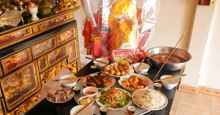
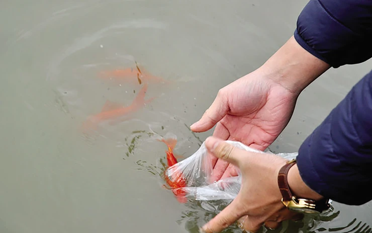
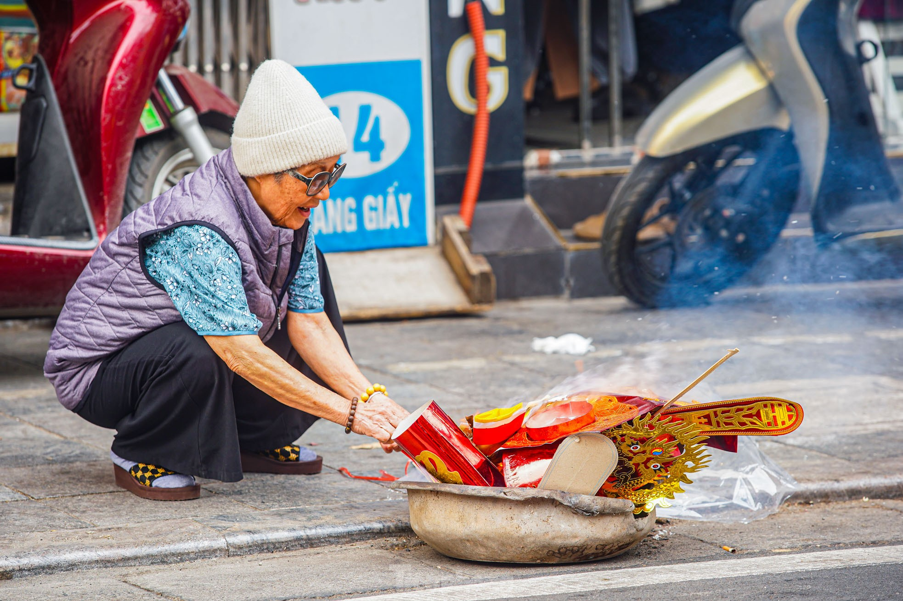

🔥 Phong Tục Cúng Ông Công Ông Táo
Nguồn Gốc
Phong tục cúng Ông Công Ông Táo có nguồn gốc từ tín ngưỡng dân gian Việt Nam,
xuất phát từ câu chuyện về ba vị thần cai quản việc bếp núc trong gia đình.
Theo truyền thuyết, có ba vị thần: Thần Đất (Ông Công), Thần Bếp (Ông Táo) và Thần Nước,
được gọi chung là "Táo Quân" hay "Vua Bếp".
Tương truyền, mỗi năm vào ngày 23 tháng Chạp (âm lịch), ba vị Táo Quân sẽ cưỡi cá chép
bay lên thiên đình để báo cáo với Ngọc Hoàng về những việc làm tốt và xấu của gia đình trong năm qua.
Đến đêm Giao thừa, các vị sẽ quay trở lại để tiếp tục cai quản việc bếp núc.
Ý Nghĩa Tâm Linh
Việc cúng Ông Công Ông Táo mang nhiều ý nghĩa tâm linh sâu sắc:
- Tri ân và cảm tạ: Cảm ơn các vị thần đã bảo vệ và phù hộ cho gia đình trong suốt năm qua
- Cầu mong may mắn: Mong các vị sẽ báo cáo những điều tốt đẹp lên Ngọc Hoàng để gia đình được ban phước
- Xua đuổi xui xẻo: Tiễn những điều không may mắn của năm cũ đi theo khói hương
- Khởi đầu mới: Đánh dấu sự bắt đầu của những ngày chuẩn bị Tết, tạo không khí thiêng liêng
- Gắn kết gia đình: Cả gia đình cùng nhau chuẩn bị và thực hiện nghi lễ, tăng thêm sự đoàn kết
Thời Gian và Cách Thực Hiện
📅 Thời gian cúng: Ngày 23 tháng Chạp (âm lịch), thường cúng vào buổi trưa hoặc chiều tối,
trước khi mặt trời lặn. Đây là thời điểm các vị Táo Quân bắt đầu hành trình lên thiên đình.
Lễ Vật Cúng Ông Công Ông Táo
Mâm cúng thường bao gồm:
- Hương (nhang): Thắp hương để mời các vị thần
- Hoa tươi: Hoa cúc vàng, hoa hồng đỏ
- Trái cây: Ngũ quả (5 loại quả khác nhau) tượng trưng cho ngũ phúc
- Bánh kẹo: Bánh, kẹo, mứt các loại
- Vàng mã: Áo, mũ, hia cho ba vị Táo Quân
- Cá chép sống: Để các vị cưỡi lên trời (sau khi cúng sẽ phóng sinh)
- Rượu, trà: Để dâng lên các vị
- Gạo, muối: Những vật phẩm cơ bản của cuộc sống
Cách Thực Hiện Nghi Lễ
- Chuẩn bị: Dọn dẹp bàn thờ, bếp núc sạch sẽ trước ngày cúng
- Bày biện: Sắp xếp mâm cúng trên bàn thờ hoặc nơi trang trọng trong nhà bếp
- Thắp hương: Thắp 3 nén hương, vái 3 lần và khấn lời cầu nguyện
- Khấn vái: Đọc lời khấn với lòng thành kính, cầu xin các vị phù hộ cho gia đình
- Đợi hương tàn: Chờ hương cháy hết (thường khoảng 30-45 phút)
- Hóa vàng: Đốt vàng mã để gửi lên các vị
- Phóng sinh cá chép: Thả cá chép xuống sông, hồ hoặc ao để các vị cưỡi lên trời
Lời Khấn Mẫu
"Nam mô A Di Đà Phật!
Kính lạy Ngài Đông Trù Tư Mệnh Táo Phủ Thần Quân
Hôm nay là ngày 23 tháng Chạp năm [năm âm lịch]
Tín chủ (chúng) con là: [Tên người cúng]
Ngụ tại: [Địa chỉ]
Kính cẩn sắm sanh phẩm vật, hương hoa phù tửu lễ nghi,
Cung nghênh Táo Quân về trời, tâu bày việc tốt, che chở việc xấu.
Cầu mong Táo Quân phù hộ cho gia đình chúng con:
An khang thịnh vượng, vạn sự như ý,
Tài lộc dồi dào, sức khỏe dồi dào,
Gia đình hòa thuận, con cháu hiếu thảo.
Nam mô A Di Đà Phật!"

🔥 Mâm Cúng
Mâm cúng Ông Công Ông Táo

🐟 Cá Chép
Cá chép phóng sinh

💰 Vàng Mã
Vàng mã cho Ông Táo
Lưu Ý Quan Trọng
- Nên cúng với tấm lòng thành kính, không cần quá cầu kỳ về vật phẩm
- Phóng sinh cá chép là hành động tốt, nên thả ở nơi nước sạch
- Sau khi cúng, gia đình có thể cùng nhau dùng bữa để tăng thêm không khí sum họp
- Không nên cúng quá muộn, tốt nhất là trước 18 giờ